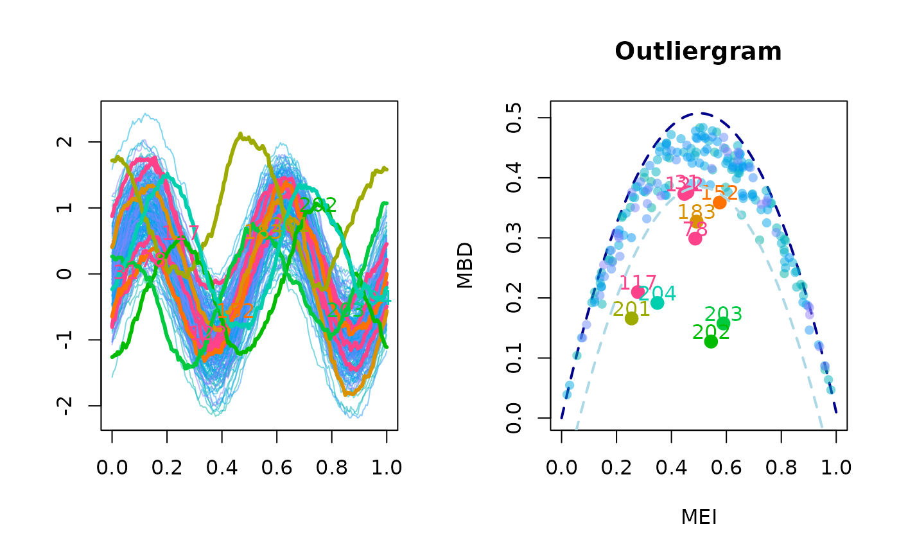
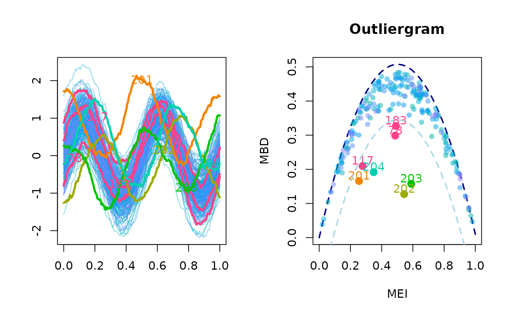

This function performs the outliergram of a univariate functional data set, possibly with an adjustment of the true positive rate of outliers discovered under assumption of gaussianity.
outliergram(
fData,
MBD_data = NULL,
MEI_data = NULL,
p_check = 0.05,
Fvalue = 1.5,
adjust = FALSE,
display = TRUE,
xlab = NULL,
ylab = NULL,
main = NULL,
...
)the univariate functional dataset whose outliergram has to be determined.
a vector containing the MBD for each element of the dataset. If missing, MBDs are computed.
a vector containing the MEI for each element of the dataset. If not not provided, MEIs are computed.
percentage of observations with either low or high MEI to be checked for outliers in the secondary step (shift towards the center of the dataset).
the \(F\) value to be used in the procedure that finds the
shape outliers by looking at the lower parabolic limit in the outliergram.
Default is 1.5. You can also leave the default value and, by providing
the parameter adjust, specify that you want Fvalue to be
adjusted for the dataset provided in fData.
either FALSE if you would like the default value for the
inflation factor, \(F = 1.5\), to be used, or a list specifying the
parameters required by the adjustment.
"N_trials": the number of repetitions of the adjustment
procedure based on the simulation of a gaussian population of functional
data, each one producing an adjusted value of \(F\), which will lead
to the averaged adjusted value \(\bar{F}\). Default is 20;
"trial_size": the number of elements in the gaussian
population of functional data that will be simulated at each repetition of
the adjustment procedure. Default is 5 * fData$N;
"TPR": the True Positive Rate of outliers, i.e. the proportion
of observations in a dataset without shape outliers that have to be considered
outliers. Default is 2 * pnorm( 4 * qnorm( 0.25 ) );
"F_min": the minimum value of \(F\), defining the left
boundary for the optimization problem aimed at finding, for a given dataset
of simulated gaussian data associated to fData, the optimal value of
\(F\). Default is 0.5;
"F_max": the maximum value of \(F\), defining the right
boundary for the optimization problem aimed at finding, for a given dataset
of simulated gaussian data associated to fData, the optimal value of
\(F\). Default is 20;
"tol": the tolerance to be used in the optimization problem
aimed at finding, for a given dataset of simulated gaussian data associated
to fData, the optimal value of \(F\). Default is 1e-3;
"maxiter": the maximum number of iterations to solve the
optimization problem aimed at finding, for a given dataset of simulated
gaussian data associated to fData, the optimal value of \(F\).
Default is 100;
"VERBOSE": a parameter controlling the verbosity of the
adjustment process;
either a logical value indicating whether you want the outliergram to be displayed, or the number of the graphical device where you want the outliergram to be displayed.
a list of two labels to use on the x axis when displaying the functional dataset and the outliergram
a list of two labels to use on the y axis when displaying the functional dataset and the outliergram;
a list of two titles to be used on the plot of the functional dataset and the outliergram;
additional graphical parameters to be used only in the plot of the functional dataset
Even when used graphically to plot the outliergram, the function returns a list containing:
Fvalue: the value of the parameter F used;
d: the vector of values of the parameter \(d\) for each observation
(distance to the parabolic border of the outliergram);
ID_outliers: the vector of observations id corresponding to outliers.
When the adjustment option is selected, the value of \(F\) is optimized for
the univariate functional dataset provided with fData. In practice,
a number adjust$N_trials of times a synthetic population
(of size adjust$trial_size with the same covariance (robustly
estimated from data) and centerline as fData is simulated without
outliers and each time an optimized value \(F_i\) is computed so that a
given proportion (adjust$TPR) of observations is flagged as outliers.
The final value of F for the outliergram is determined as an average
of \(F_1, F_2, \ldots, F_{N_{trials}}\). At each time step the optimization
problem is solved using stats::uniroot (Brent's method).
Arribas-Gil, A., and Romo, J. (2014). Shape outlier detection and visualization for functional data: the outliergram, Biostatistics, 15(4), 603-619.
set.seed(1618)
N <- 200
P <- 200
N_extra <- 4
grid <- seq(0, 1, length.out = P)
Cov <- exp_cov_function(grid, alpha = 0.2, beta = 0.8)
Data <- generate_gauss_fdata(
N = N,
centerline = sin(4 * pi * grid),
Cov = Cov
)
Data_extra <- array(0, dim = c(N_extra, P))
Data_extra[1, ] <- generate_gauss_fdata(
N = 1,
centerline = sin(4 * pi * grid + pi / 2),
Cov = Cov
)
Data_extra[2, ] <- generate_gauss_fdata(
N = 1,
centerline = sin(4 * pi * grid - pi / 2),
Cov = Cov
)
Data_extra[3, ] <- generate_gauss_fdata(
N = 1,
centerline = sin(4 * pi * grid + pi / 3),
Cov = Cov
)
Data_extra[4, ] <- generate_gauss_fdata(
N = 1,
centerline = sin(4 * pi * grid - pi / 3),
Cov = Cov
)
Data <- rbind(Data, Data_extra)
fD <- fData(grid, Data)
# Outliergram with default Fvalue = 1.5
outliergram(fD, display = TRUE)

#> $Fvalue
#> [1] 1.5
#>
#> $d
#> [1] 0.0176114544 0.0435426917 0.0412298416 0.0514984256 0.0077678825
#> [6] 0.1050423923 0.1148547172 0.0209557568 0.0256050951 0.0502039976
#> [11] 0.0756444690 0.0957069255 0.0955864955 0.0242157817 0.0586735137
#> [16] 0.0521609727 0.0385210808 0.0291574616 0.0033550662 0.0249060707
#> [21] 0.0027138800 0.0110386313 0.0369225104 0.0235194135 0.0663697672
#> [26] 0.0122081027 0.0323289373 0.0047425867 0.1221622911 0.0127359690
#> [31] 0.1273363747 0.0640854716 0.0130654689 0.0896622609 0.0008577115
#> [36] 0.0121720226 0.0571897952 0.0082277782 0.0199523037 0.0144423404
#> [41] 0.0151378151 0.0468399449 0.0157327152 0.0008372018 0.0157999807
#> [46] 0.0152336328 0.0385340372 0.0173677388 0.0503822068 0.0643135130
#> [51] 0.0029821682 0.0830116379 0.0294097122 0.0154149715 0.0059378622
#> [56] 0.0265120207 0.0190215397 0.1096481165 0.0582267169 0.0105365401
#> [61] 0.0529575534 0.0302322890 0.0379700075 0.0143013124 0.0608756290
#> [66] 0.0568058099 0.0438073940 0.0378637001 0.0278497525 0.0695197902
#> [71] 0.0185139271 0.1072170856 0.0321988300 0.0481022397 0.0395259526
#> [76] 0.0729589249 0.0201002560 0.2081087306 0.0137075908 0.0540464491
#> [81] 0.0141294492 0.0598529702 0.0002333611 0.0454489713 0.0212358302
#> [86] 0.0150530655 0.0247384224 0.0347266493 0.0594439667 0.0610557314
#> [91] 0.0871014730 0.0028619675 0.0029285895 0.0653213936 0.0235917125
#> [96] 0.0225797547 0.0709666172 0.0589656609 0.0399139271 0.0332606865
#> [101] 0.0596849995 0.0927871148 0.0334329711 0.0531944895 0.0621790483
#> [106] 0.0251286475 0.0374558051 0.0189191539 0.0584951596 0.0622928994
#> [111] 0.0908447201 0.0634798802 0.0088101565 0.1152498201 0.0248140623
#> [116] 0.1155564559 0.1963871148 0.0298872742 0.0373160243 0.0209620098
#> [121] 0.0437059596 0.1281782466 0.0849571030 0.0205120243 0.0633598184
#> [126] 0.0499718427 0.1043016505 0.0235167572 0.0209989556 0.0084202345
#> [131] 0.0290659603 0.0223782430 0.0616137726 0.0816347146 0.0271277299
#> [136] 0.1160831402 0.0514680177 0.0240108845 0.0393020272 0.0386456088
#> [141] 0.0690514815 0.0312561564 0.0398580122 0.0828859159 0.0406998829
#> [146] 0.0582855211 0.0458848148 0.0228874674 0.0871308691 0.0260329325
#> [151] 0.0832803584 0.1377272180 0.0578802811 0.0421784797 0.0166601903
#> [156] 0.0400398327 0.0351458708 0.0212783239 0.0488423211 0.0551136856
#> [161] 0.0310677473 0.0408971784 0.0293353569 0.0689828021 0.1011523218
#> [166] 0.0520131834 0.0631049503 0.0197210422 0.0300590360 0.0302012448
#> [171] 0.0220787103 0.0388785666 0.0213618939 0.0689322890 0.0453167186
#> [176] 0.0244730561 0.0422584939 0.0420099247 0.0774596240 0.0068152420
#> [181] 0.0112290822 0.0553901659 0.1800951113 0.0124814064 0.0392902492
#> [186] 0.0044056686 0.0880005602 0.0088245871 0.0463041039 0.0346741416
#> [191] 0.0016150379 0.0093634200 0.0007821392 0.0071868045 0.0264287839
#> [196] 0.0436299515 0.0247155788 0.0500915665 0.0978481587 0.0120163769
#> [201] 0.2184629757 0.3764946924 0.3347489423 0.2682646467
#>
#> $ID_outliers
#> [1] 31 78 117 122 152 183 201 202 203 204
#>
# Outliergram with Fvalue enforced to 2.5
outliergram(fD, Fvalue = 2.5, display = TRUE)
#> $Fvalue
#> [1] 2.5
#>
#> $d
#> [1] 0.0176114544 0.0435426917 0.0412298416 0.0514984256 0.0077678825
#> [6] 0.1050423923 0.1148547172 0.0209557568 0.0256050951 0.0502039976
#> [11] 0.0756444690 0.0957069255 0.0955864955 0.0242157817 0.0586735137
#> [16] 0.0521609727 0.0385210808 0.0291574616 0.0033550662 0.0249060707
#> [21] 0.0027138800 0.0110386313 0.0369225104 0.0235194135 0.0663697672
#> [26] 0.0122081027 0.0323289373 0.0047425867 0.1221622911 0.0127359690
#> [31] 0.1273363747 0.0640854716 0.0130654689 0.0896622609 0.0008577115
#> [36] 0.0121720226 0.0571897952 0.0082277782 0.0199523037 0.0144423404
#> [41] 0.0151378151 0.0468399449 0.0157327152 0.0008372018 0.0157999807
#> [46] 0.0152336328 0.0385340372 0.0173677388 0.0503822068 0.0643135130
#> [51] 0.0029821682 0.0830116379 0.0294097122 0.0154149715 0.0059378622
#> [56] 0.0265120207 0.0190215397 0.1096481165 0.0582267169 0.0105365401
#> [61] 0.0529575534 0.0302322890 0.0379700075 0.0143013124 0.0608756290
#> [66] 0.0568058099 0.0438073940 0.0378637001 0.0278497525 0.0695197902
#> [71] 0.0185139271 0.1072170856 0.0321988300 0.0481022397 0.0395259526
#> [76] 0.0729589249 0.0201002560 0.2081087306 0.0137075908 0.0540464491
#> [81] 0.0141294492 0.0598529702 0.0002333611 0.0454489713 0.0212358302
#> [86] 0.0150530655 0.0247384224 0.0347266493 0.0594439667 0.0610557314
#> [91] 0.0871014730 0.0028619675 0.0029285895 0.0653213936 0.0235917125
#> [96] 0.0225797547 0.0709666172 0.0589656609 0.0399139271 0.0332606865
#> [101] 0.0596849995 0.0927871148 0.0334329711 0.0531944895 0.0621790483
#> [106] 0.0251286475 0.0374558051 0.0189191539 0.0584951596 0.0622928994
#> [111] 0.0908447201 0.0634798802 0.0088101565 0.1152498201 0.0248140623
#> [116] 0.1155564559 0.1963871148 0.0298872742 0.0373160243 0.0209620098
#> [121] 0.0437059596 0.1281782466 0.0849571030 0.0205120243 0.0633598184
#> [126] 0.0499718427 0.1043016505 0.0235167572 0.0209989556 0.0084202345
#> [131] 0.0290659603 0.0223782430 0.0616137726 0.0816347146 0.0271277299
#> [136] 0.1160831402 0.0514680177 0.0240108845 0.0393020272 0.0386456088
#> [141] 0.0690514815 0.0312561564 0.0398580122 0.0828859159 0.0406998829
#> [146] 0.0582855211 0.0458848148 0.0228874674 0.0871308691 0.0260329325
#> [151] 0.0832803584 0.1377272180 0.0578802811 0.0421784797 0.0166601903
#> [156] 0.0400398327 0.0351458708 0.0212783239 0.0488423211 0.0551136856
#> [161] 0.0310677473 0.0408971784 0.0293353569 0.0689828021 0.1011523218
#> [166] 0.0520131834 0.0631049503 0.0197210422 0.0300590360 0.0302012448
#> [171] 0.0220787103 0.0388785666 0.0213618939 0.0689322890 0.0453167186
#> [176] 0.0244730561 0.0422584939 0.0420099247 0.0774596240 0.0068152420
#> [181] 0.0112290822 0.0553901659 0.1800951113 0.0124814064 0.0392902492
#> [186] 0.0044056686 0.0880005602 0.0088245871 0.0463041039 0.0346741416
#> [191] 0.0016150379 0.0093634200 0.0007821392 0.0071868045 0.0264287839
#> [196] 0.0436299515 0.0247155788 0.0500915665 0.0978481587 0.0120163769
#> [201] 0.2184629757 0.3764946924 0.3347489423 0.2682646467
#>
#> $ID_outliers
#> [1] 78 117 183 201 202 203 204
#>
# \donttest{
# Outliergram with estimated Fvalue to ensure TPR of 1%
outliergram(
fData = fD,
adjust = list(
N_trials = 10,
trial_size = 5 * nrow(Data),
TPR = 0.01,
VERBOSE = FALSE
),
display = TRUE
)

#> $Fvalue
#> [1] 2.474683
#>
#> $d
#> [1] 0.0176114544 0.0435426917 0.0412298416 0.0514984256 0.0077678825
#> [6] 0.1050423923 0.1148547172 0.0209557568 0.0256050951 0.0502039976
#> [11] 0.0756444690 0.0957069255 0.0955864955 0.0242157817 0.0586735137
#> [16] 0.0521609727 0.0385210808 0.0291574616 0.0033550662 0.0249060707
#> [21] 0.0027138800 0.0110386313 0.0369225104 0.0235194135 0.0663697672
#> [26] 0.0122081027 0.0323289373 0.0047425867 0.1221622911 0.0127359690
#> [31] 0.1273363747 0.0640854716 0.0130654689 0.0896622609 0.0008577115
#> [36] 0.0121720226 0.0571897952 0.0082277782 0.0199523037 0.0144423404
#> [41] 0.0151378151 0.0468399449 0.0157327152 0.0008372018 0.0157999807
#> [46] 0.0152336328 0.0385340372 0.0173677388 0.0503822068 0.0643135130
#> [51] 0.0029821682 0.0830116379 0.0294097122 0.0154149715 0.0059378622
#> [56] 0.0265120207 0.0190215397 0.1096481165 0.0582267169 0.0105365401
#> [61] 0.0529575534 0.0302322890 0.0379700075 0.0143013124 0.0608756290
#> [66] 0.0568058099 0.0438073940 0.0378637001 0.0278497525 0.0695197902
#> [71] 0.0185139271 0.1072170856 0.0321988300 0.0481022397 0.0395259526
#> [76] 0.0729589249 0.0201002560 0.2081087306 0.0137075908 0.0540464491
#> [81] 0.0141294492 0.0598529702 0.0002333611 0.0454489713 0.0212358302
#> [86] 0.0150530655 0.0247384224 0.0347266493 0.0594439667 0.0610557314
#> [91] 0.0871014730 0.0028619675 0.0029285895 0.0653213936 0.0235917125
#> [96] 0.0225797547 0.0709666172 0.0589656609 0.0399139271 0.0332606865
#> [101] 0.0596849995 0.0927871148 0.0334329711 0.0531944895 0.0621790483
#> [106] 0.0251286475 0.0374558051 0.0189191539 0.0584951596 0.0622928994
#> [111] 0.0908447201 0.0634798802 0.0088101565 0.1152498201 0.0248140623
#> [116] 0.1155564559 0.1963871148 0.0298872742 0.0373160243 0.0209620098
#> [121] 0.0437059596 0.1281782466 0.0849571030 0.0205120243 0.0633598184
#> [126] 0.0499718427 0.1043016505 0.0235167572 0.0209989556 0.0084202345
#> [131] 0.0290659603 0.0223782430 0.0616137726 0.0816347146 0.0271277299
#> [136] 0.1160831402 0.0514680177 0.0240108845 0.0393020272 0.0386456088
#> [141] 0.0690514815 0.0312561564 0.0398580122 0.0828859159 0.0406998829
#> [146] 0.0582855211 0.0458848148 0.0228874674 0.0871308691 0.0260329325
#> [151] 0.0832803584 0.1377272180 0.0578802811 0.0421784797 0.0166601903
#> [156] 0.0400398327 0.0351458708 0.0212783239 0.0488423211 0.0551136856
#> [161] 0.0310677473 0.0408971784 0.0293353569 0.0689828021 0.1011523218
#> [166] 0.0520131834 0.0631049503 0.0197210422 0.0300590360 0.0302012448
#> [171] 0.0220787103 0.0388785666 0.0213618939 0.0689322890 0.0453167186
#> [176] 0.0244730561 0.0422584939 0.0420099247 0.0774596240 0.0068152420
#> [181] 0.0112290822 0.0553901659 0.1800951113 0.0124814064 0.0392902492
#> [186] 0.0044056686 0.0880005602 0.0088245871 0.0463041039 0.0346741416
#> [191] 0.0016150379 0.0093634200 0.0007821392 0.0071868045 0.0264287839
#> [196] 0.0436299515 0.0247155788 0.0500915665 0.0978481587 0.0120163769
#> [201] 0.2184629757 0.3764946924 0.3347489423 0.2682646467
#>
#> $ID_outliers
#> [1] 78 117 183 201 202 203 204
#>
# }